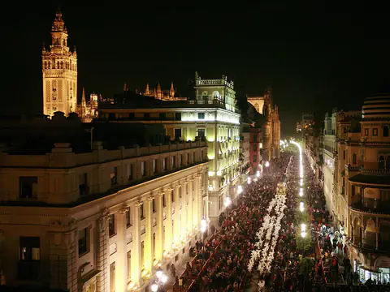
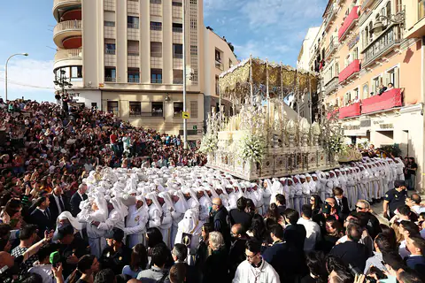
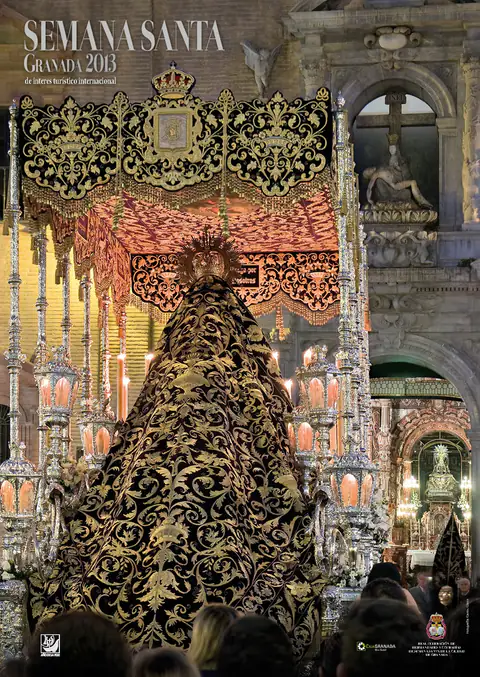
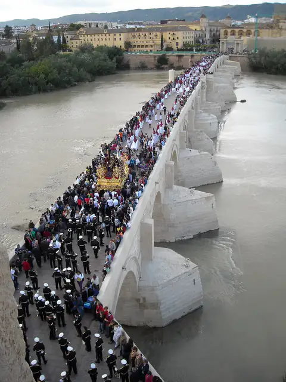
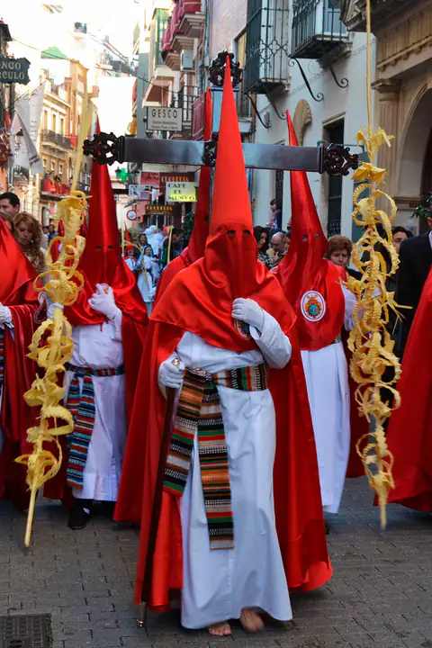
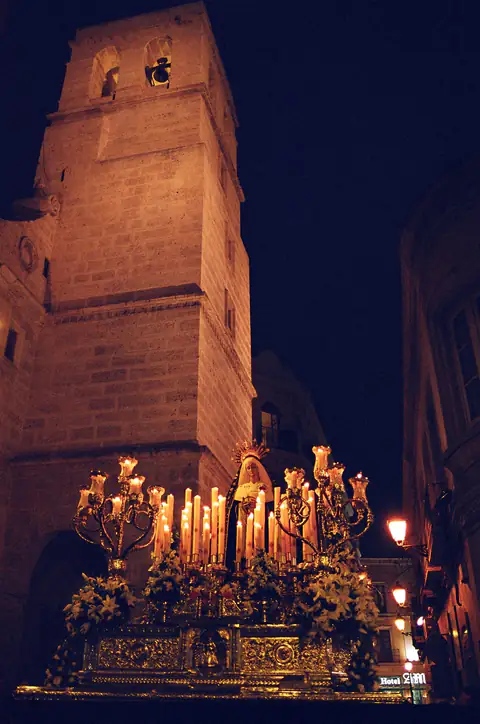
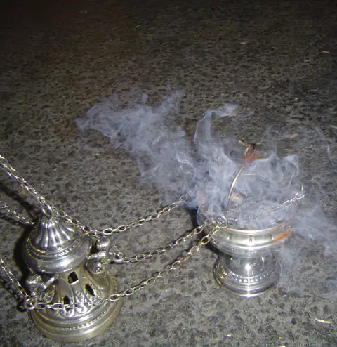

Semana Santa de Andalucía
Ocho ciudades. Una Semana Santa.
Qué sale hoy, noticias de cada día y la historia de 306 hermandades, 117 bandas y 149 imagineros de Sevilla a Almería.
165días para el Domingo de Ramos · 21 de marzo de 2027
Domingo de Ramos: así salen las ocho capitales
| 01 | Sevilla | 9 hermandades |
| 02 | Málaga | 9 hermandades |
| 03 | Granada | 5 hermandades |
| 04 | Córdoba | 7 hermandades |
| 05 | Cádiz | 5 hermandades |
| 06 | Huelva | 4 hermandades |
| 07 | Almería | 4 hermandades |
| 08 | Jaén | 4 hermandades |
Las ocho planchas
Elige una capital
0137.38° N
Sevilla

0236.72° N
Málaga

0337.18° N
Granada

0437.88° N
Córdoba
0536.53° N
Cádiz

0637.26° N
Huelva

0736.84° N
Almería

0837.77° N
Jaén
Agenda
Todo el calendario →17oct
Salida extraordinaria de Santa María de la Merced
Córdoba · Salida extraordinaria
01nov
La Cena sale con el Dulce Nombre de Granada
Granada · Salida extraordinaria
14nov
Salida extraordinaria de Jesús de la Pasión
Málaga · Salida extraordinaria
14ene
Presentación del cartel de la Semana Santa
Málaga · Cartel
Últimas noticias
Todas →● Málaga101TVhace 3 h
El supermercado de las cofradías que ayuda a 550 familias en Málaga● GranadaIdealhace 4 h
La Aurora abre su joyero en el zaguán de San Juan de Dios● CádizGente de Pazhace 1 h
Una obra de Ildefonso Pérez López ilustrará el cartel de la Semana Santa de La Línea● CórdobaABChace 5 h
Más de 500 inscritos asistirán al curso de formación cofrade de la diócesis